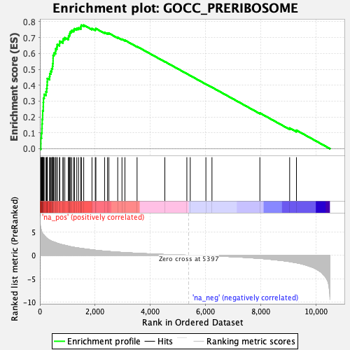
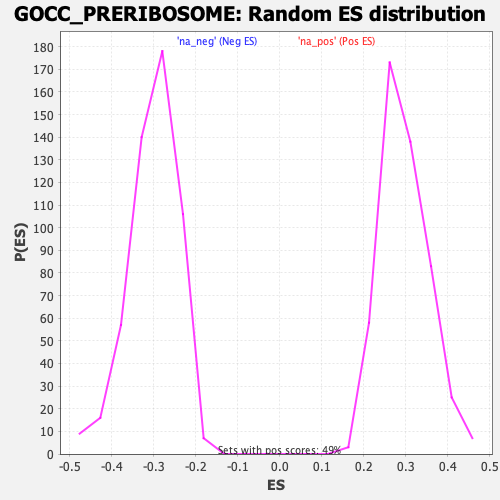

| Dataset | qlf.KOd4vsWTd4_gsea_score |
| Phenotype | NoPhenotypeAvailable |
| Upregulated in class | na_pos |
| GeneSet | GOCC_PRERIBOSOME |
| Enrichment Score (ES) | 0.7784329 |
| Normalized Enrichment Score (NES) | 2.635476 |
| Nominal p-value | 0.0 |
| FDR q-value | 0.0 |
| FWER p-Value | 0.0 |

| SYMBOL | RANK IN GENE LIST | RANK METRIC SCORE | RUNNING ES | CORE ENRICHMENT | |
|---|---|---|---|---|---|
| 1 | NIP7 | 34 | 5.754 | 0.0319 | Yes |
| 2 | PPAN | 35 | 5.748 | 0.0671 | Yes |
| 3 | RSL1D1 | 58 | 5.337 | 0.0976 | Yes |
| 4 | MRTO4 | 74 | 4.911 | 0.1262 | Yes |
| 5 | NOP56 | 78 | 4.856 | 0.1556 | Yes |
| 6 | NOP58 | 84 | 4.801 | 0.1845 | Yes |
| 7 | FBL | 99 | 4.608 | 0.2113 | Yes |
| 8 | WDR74 | 101 | 4.591 | 0.2393 | Yes |
| 9 | LTV1 | 122 | 4.442 | 0.2645 | Yes |
| 10 | FTSJ3 | 124 | 4.436 | 0.2916 | Yes |
| 11 | RRP9 | 130 | 4.393 | 0.3180 | Yes |
| 12 | BYSL | 156 | 4.245 | 0.3415 | Yes |
| 13 | RRP1B | 220 | 3.809 | 0.3588 | Yes |
| 14 | RRP15 | 247 | 3.667 | 0.3787 | Yes |
| 15 | IMP4 | 258 | 3.576 | 0.3996 | Yes |
| 16 | NOB1 | 267 | 3.545 | 0.4205 | Yes |
| 17 | MPHOSPH10 | 269 | 3.536 | 0.4421 | Yes |
| 18 | WDR36 | 350 | 3.238 | 0.4542 | Yes |
| 19 | NOC4L | 359 | 3.213 | 0.4731 | Yes |
| 20 | LAS1L | 398 | 3.082 | 0.4883 | Yes |
| 21 | EBNA1BP2 | 428 | 3.003 | 0.5039 | Yes |
| 22 | TBL3 | 457 | 2.929 | 0.5191 | Yes |
| 23 | TSR1 | 466 | 2.916 | 0.5362 | Yes |
| 24 | PES1 | 477 | 2.894 | 0.5529 | Yes |
| 25 | BOP1 | 478 | 2.892 | 0.5706 | Yes |
| 26 | PWP2 | 480 | 2.887 | 0.5882 | Yes |
| 27 | WDR46 | 514 | 2.812 | 0.6022 | Yes |
| 28 | UTP18 | 567 | 2.696 | 0.6137 | Yes |
| 29 | UTP20 | 572 | 2.682 | 0.6297 | Yes |
| 30 | DCAF13 | 616 | 2.575 | 0.6413 | Yes |
| 31 | NOL10 | 628 | 2.546 | 0.6559 | Yes |
| 32 | RRP7A | 710 | 2.401 | 0.6628 | Yes |
| 33 | MDN1 | 718 | 2.381 | 0.6767 | Yes |
| 34 | EIF6 | 834 | 2.215 | 0.6792 | Yes |
| 35 | KRR1 | 847 | 2.198 | 0.6915 | Yes |
| 36 | FCF1 | 903 | 2.119 | 0.6992 | Yes |
| 37 | XRCC5 | 1030 | 1.942 | 0.6990 | Yes |
| 38 | RIOK2 | 1040 | 1.931 | 0.7099 | Yes |
| 39 | HEATR1 | 1071 | 1.869 | 0.7185 | Yes |
| 40 | RRS1 | 1087 | 1.849 | 0.7283 | Yes |
| 41 | UTP14A | 1107 | 1.824 | 0.7377 | Yes |
| 42 | RPS7 | 1153 | 1.780 | 0.7443 | Yes |
| 43 | SRFBP1 | 1226 | 1.703 | 0.7478 | Yes |
| 44 | MAK16 | 1251 | 1.677 | 0.7557 | Yes |
| 45 | UTP6 | 1337 | 1.591 | 0.7573 | Yes |
| 46 | WDR3 | 1403 | 1.538 | 0.7605 | Yes |
| 47 | NOL6 | 1484 | 1.467 | 0.7618 | Yes |
| 48 | WDR12 | 1485 | 1.467 | 0.7708 | Yes |
| 49 | PDCD11 | 1502 | 1.454 | 0.7781 | Yes |
| 50 | NOP14 | 1588 | 1.381 | 0.7784 | Yes |
| 51 | IMP3 | 1887 | 1.160 | 0.7570 | No |
| 52 | UTP3 | 2007 | 1.074 | 0.7522 | No |
| 53 | NOP9 | 2029 | 1.056 | 0.7566 | No |
| 54 | RIOK1 | 2344 | 0.876 | 0.7319 | No |
| 55 | NOC2L | 2449 | 0.833 | 0.7270 | No |
| 56 | RPF1 | 2499 | 0.800 | 0.7272 | No |
| 57 | BMS1 | 2820 | 0.663 | 0.7006 | No |
| 58 | NSA2 | 2974 | 0.604 | 0.6897 | No |
| 59 | RRP1 | 3081 | 0.568 | 0.6830 | No |
| 60 | EMG1 | 3521 | 0.422 | 0.6435 | No |
| 61 | RRP36 | 4527 | 0.162 | 0.5483 | No |
| 62 | NGDN | 5325 | 0.015 | 0.4720 | No |
| 63 | WDR37 | 5448 | -0.007 | 0.4604 | No |
| 64 | UTP23 | 6015 | -0.099 | 0.4068 | No |
| 65 | FBXW9 | 6235 | -0.142 | 0.3867 | No |
| 66 | KRI1 | 7971 | -0.682 | 0.2247 | No |
| 67 | RIOK3 | 9050 | -1.352 | 0.1297 | No |
| 68 | PRKDC | 9296 | -1.614 | 0.1161 | No |
